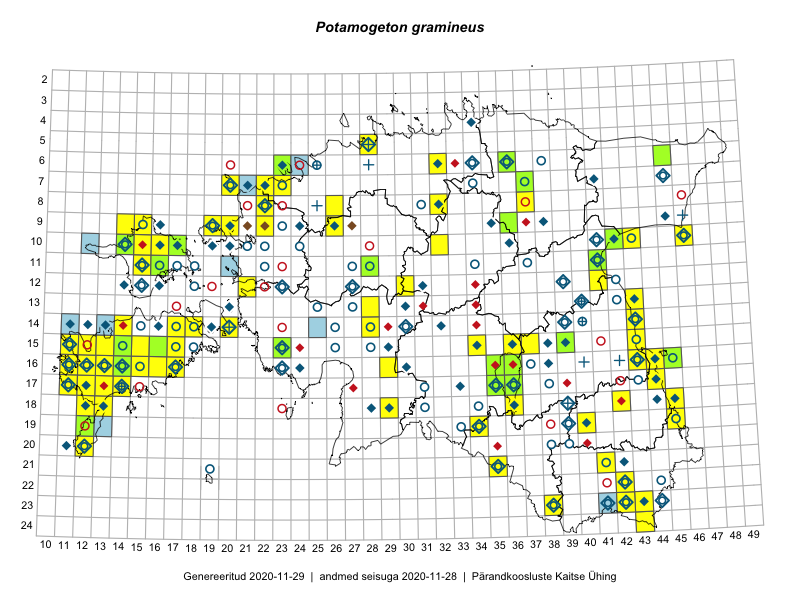

Potamogeton gramineus — hein-penikeel
Potamogetonaceae :: Potamogeton gramineus L. (613)

Kaart põhineb 721 kirjel:
vaatlusi 324
herbaareksemplare 289
PKÜ kirjeid1 6
ELFi kirjeid2 102
Taime kaasaegsed ja ajaloolised leiukohad asuvad 190 ruudus.
Tingmärgid ja leidudega ruutude arvud periooditi uues (u) ja 2005 andmestikus (v)
| █ | vahemik | u3 | v4 |
|---|---|---|---|
| █ | 2006–2020 | 104 | – |
| ◆/◇ | 1971–2005 | 101 | 119 |
| ○ | 1921–1970 | 93 | 47 |
| + | kuni 1920 | 12 | 1 |
| × | hävinud | – | 2 |
| ? | kaheldav | – | 1 |
| Ruut | Leidja(d) | Leiuaeg | Kirje |
|---|---|---|---|
| 14-14 | Mari Reitalu, Sirje Azarov | 2020-08-24 | ruut/ala: Potamogeton gramineus L. |
| 14-17 | Mari Reitalu, Sirje Azarov | 2020-08-18 | ruut/ala: Potamogeton gramineus L. |
| 14-20 | Mari Reitalu, Sirje Azarov | 2020-08-11 | ruut/ala: Potamogeton gramineus L. |
| 16-17 | Mari Reitalu, Sirje Azarov | 2020-08-08–2020-08-29 | ruut/ala: Potamogeton gramineus L. |
| 15-15 | Mari Reitalu, Sirje Azarov | 2020-08-07 | ruut/ala: Potamogeton gramineus L. |
| 14-43 | Helle Mäemets, Kadi Palmik-Das | 2020-07-28 | punkt: Potamogeton gramineus L. |
| 17-44 | Helle Mäemets, Kadi Palmik-Das | 2020-07-27 | punkt: Potamogeton gramineus L. |
| 22-42 | Helle Mäemets, Kadi Palmik-Das | 2020-07-20 | punkt: Potamogeton gramineus L. |
| 16-15 | Mari Reitalu, Sirje Azarov, Anne Teigamägi | 2020-07-07 | ruut/ala: Potamogeton gramineus L. |
| 06-45 | Thea Kull, Toomas Kukk | 2019-09-11 | TAA0148100: Potamogeton gramineus L. |
| 10-46 | Peedu Saar, Timo Luhamäe | 2019-09-11 | ruut/ala: Potamogeton gramineus L. |
| 09-22 | Ott Luuk | 2019-09-04 | punkt: Potamogeton gramineus L. |
| 09-22 | Ott Luuk | 2019-09-04 | ELF: 3020 |
| 15-13 | Sirje Azarov, Mari Reitalu | 2019-08-31 | ELF: 19566 |
| 15-13 | Mari Reitalu, Sirje Azarov | 2019-08-31 | ruut/ala: Potamogeton gramineus L. |
| 15-23 | Indrek Tammekänd, Janno Tammekänd, Heili Tammekänd, Liine Tammekänd | 2019-08-28 | TAA0151753: Potamogeton gramineus L. |
| 17-35 | Toomas Kukk, Peedu Saar, Martin Tikk | 2019-08-27 | TAA0148599: Potamogeton gramineus L. |
| 17-35 | Toomas Kukk, Peedu Saar, Martin Tikk | 2019-08-27 | TAA0148600: Potamogeton gramineus L. |
| 17-44 | Helle Mäemets, Kadi Palmik-Das | 2019-08-26 | punkt: Potamogeton gramineus L. |
| 09-22 | Tõnu Ploompuu | 2019-08-20 | ELF: 3039 |
| 17-13 | Mari Reitalu, Sirje Azarov | 2019-08-19 | ELF: 23 |
| 07-21 | Peedu Saar | 2019-08-15 | ELF: 3269 |
| 16-13 | Mari Reitalu, Sirje Azarov | 2019-08-15 | ELF: 13 |
| 16-12 | Sirje Azarov, Mari Reitalu | 2019-08-06 | ELF: 59 |
| 16-12 | Mari Reitalu, Sirje Azarov | 2019-08-06 | ELF: 60 |
| 16-12 | Sirje Azarov, Mari Reitalu | 2019-08-05 | ELF: 56 |
| 14-43 | Helle Mäemets, Kadi Palmik-Das | 2019-08-01 | punkt: Potamogeton gramineus L. |
| 10-42 | Helle Mäemets, Kadi Palmik-Das | 2019-08-01 | punkt: Potamogeton gramineus L. |
| 08-22 | Helle Mäemets, Kadi Palmik-Das | 2019-07-30 | punkt: Potamogeton gramineus L. |
| 18-36 | Ott Luuk, Peedu Saar | 2019-07-16 | ruut/ala: Potamogeton gramineus L. |
| 21-35 | Helle Mäemets, Kadi Palmik-Das | 2019-07-14 | punkt: Potamogeton gramineus L. |
| 24-43 | Ott Luuk, Tiit Hallikma | 2019-07-11 | ruut/ala: Potamogeton gramineus L. |
| 15-12 | Mari Reitalu, Sirje Azarov | 2019-07-10 | punkt: Potamogeton gramineus L. |
| 10-42 | Ott Luuk, Peedu Saar | 2019-07-04 | punkt: Potamogeton gramineus L. |
| 11-16 | Eerik Leibak | 2019-07-03 | TAA0153223: Potamogeton gramineus L. |
| 10-17 | Toomas Kukk | 2019-07-01 | TAA0149001: Potamogeton gramineus L. |
| 09-19 | Helle Mäemets, Kaire Torn | 2019-06-29 | punkt: Potamogeton gramineus L. |
| 08-37 | Ott Luuk, Peedu Saar | 2019-06-12 | ruut/ala: Potamogeton gramineus L. |
| 16-45 | Ott Luuk | 2019-06-07 | TAA0151629: Potamogeton gramineus L. |
| 15-39 | Ott Luuk | 2019-05-30 | TAA0151631: Potamogeton gramineus L. |
| 08-22 | Maili Lehtpuu | 2018-08-30 | punkt: Potamogeton gramineus L. |
| 11-20 | Tõnu Ploompuu, Priit Kukk | 2018-08-13 | ELF: 2656 |
| 10-42 | Helle Mäemets, Kadi Palmik-Das | 2018-08-08 | punkt: Potamogeton gramineus L. |
| 15-43 | Helle Mäemets, Kadi Palmik-Das | 2018-08-06 | punkt: Potamogeton gramineus L. |
| 14-43 | Helle Mäemets, Kadi Palmik-Das | 2018-08-06 | punkt: Potamogeton gramineus L. |
| 14-25 | Indrek Tammekänd | 2018-07-30 | ELF: 9991 |
| 14-25 | Indrek Tammekänd | 2018-07-30 | ELF: 20243 |
| 18-13 | Mari Reitalu, Sirje Azarov | 2018-07-23 | ELF: 2771 |
| 16-13 | Maili Lehtpuu | 2018-07-18 | punkt: Potamogeton gramineus L. |
| 17-12;17-13 | Mari Reitalu, Sirje Azarov | 2018-07-12 | ELF: 2473 |
| 19-12 | Mari Reitalu, Sirje Azarov | 2018-07-10 | ELF: 1276 |
| 17-12 | Mari Reitalu, Sirje Azarov | 2018-07-10 | ELF: 1373 |
| 20-12 | Mari Reitalu, Sirje Azarov | 2018-07-10 | ELF: 2877 |
| 06-23 | Peedu Saar | 2018-07-05 | punkt: Potamogeton gramineus L. |
| 06-23 | Peedu Saar | 2018-07-05 | ruut/ala: Potamogeton gramineus L. |
| 06-23 | Ott Luuk, Meeli Mesipuu, Jaak-Albert Metsoja, Mari Metsoja | 2018-07-05 | ruut/ala: Potamogeton gramineus L. |
| 06-23 | Ott Luuk, Meeli Mesipuu, Jaak-Albert Metsoja, Mari Metsoja, Peedu Saar | 2018-07-04–2018-07-06 | ruut/ala: Potamogeton gramineus L. |
| 06-23 | Ott Luuk, Meeli Mesipuu | 2018-07-04 | TAA0152247: Potamogeton gramineus L. |
| 16-14 | Toomas Kukk, Ilmar Uibopuu, Mari Reitalu | 2018-05-28 | TAA0147028: Potamogeton gramineus L. |
| 07-37 | Toomas Kukk, Peedu Saar | 2017-09-28 | ruut/ala: Potamogeton gramineus L. |
| 11-15 | Peedu Saar, Ott Luuk | 2017-09-13 | ruut/ala: Potamogeton gramineus L. |
| 10-16 | Peedu Saar, Ott Luuk | 2017-09-11 | ruut/ala: Potamogeton gramineus L. |
| 10-17 | Peedu Saar, Ott Luuk | 2017-09-11 | punkt: Potamogeton gramineus L. |
| 10-16 | Ott Luuk, Peedu Saar | 2017-09-11 | punkt: Potamogeton gramineus L. |
| 10-17 | Ott Luuk, Peedu Saar | 2017-09-11 | ruut/ala: Potamogeton gramineus L. |
| 15-36 | Helle Mäemets | 2017-08-29 | ruut/ala: Potamogeton gramineus L. |
| 12-41 | Ott Luuk, Peedu Saar | 2017-08-23 | ruut/ala: Potamogeton gramineus L. |
| 15-37 | Helen Toom, Ott Luuk | 2017-08-22 | punkt: Potamogeton gramineus L. |
| 09-15 | Helle Mäemets, Maila Moor | 2017-08-17 | punkt: Potamogeton gramineus L. |
| 11-15 | Helle Mäemets, Maila Moor | 2017-08-17 | punkt: Potamogeton gramineus L. |
| 10-14 | Helle Mäemets, Maila Moor | 2017-08-14 | punkt: Potamogeton gramineus L. |
| 14-28 | Ott Luuk, Indrek Tammekänd | 2017-08-11 | ruut/ala: Potamogeton gramineus L. |
| 07-23 | Mari Reitalu, Indrek Tammekänd | 2017-08-10 | ruut/ala: Potamogeton gramineus L. |
| 11-28 | Thea Kull, Ott Luuk | 2017-08-08 | TAA0142324: Potamogeton gramineus L. |
| 09-26 | Meeli Mesipuu, Indrek Tammekänd | 2017-08-08 | ruut/ala: Potamogeton gramineus L. |
| 07-22 | Toomas Kukk, Ilmar Uibopuu | 2017-07-29 | ruut/ala: Potamogeton gramineus L. |
| 08-22 | Toomas Kukk, Ilmar Uibopuu | 2017-07-29 | ruut/ala: Potamogeton gramineus L. |
| 06-23 | Ilmar Uibopuu, Kadri Kuusksalu | 2017-07-27 | ruut/ala: Potamogeton gramineus L. |
| 06-23 | Toomas Kukk, Ilmar Uibopuu, Kadri Kuusksalu | 2017-07-26 | ruut/ala: Potamogeton gramineus L. |
| 11-41 | Helle Mäemets, Kadi Palmik | 2017-07-24 | punkt: Potamogeton gramineus L. |
| 08-26 | Helle Mäemets, Kadi Palmik | 2017-07-16 | ruut/ala: Potamogeton gramineus L. |
| 08-26 | Helle Mäemets, Kadi Palmik | 2017-07-16 | punkt: Potamogeton gramineus L. |
| 07-22 | Helle Mäemets, Kadi Palmik-Das | 2017-07-15 | punkt: Potamogeton gramineus L. |
| 07-22 | Helle Mäemets, Kadi Palmik | 2017-07-15 | ruut/ala: Potamogeton gramineus L. |
| 07-22 | Helle Mäemets, Kadi Palmik | 2017-07-15 | ruut/ala: Potamogeton gramineus L. |
| 10-32 | Tõnu Feldmann, Katrit Karus | 2017-07-05 | ruut/ala: Potamogeton gramineus L. |
| 10-32 | Katrit Karus, Tõnu Feldmann | 2017-07-05 | ruut/ala: Potamogeton gramineus L. |
| 16-35 | Thea Kull, Ott Luuk | 2017-06-22 | TAA0142245: Potamogeton gramineus L. |
| 16-36 | Thea Kull, Ott Luuk | 2017-06-21 | TAA0142255: Potamogeton gramineus L. |
| 07-20 | Peedu Saar, Elle Roosaluste, Kaili Orav | 2017-05-29–2017-05-30 | ruut/ala: Potamogeton gramineus L. |
| 16-17 | Peedu Saar, Ott Luuk | 2016-09-01 | ruut/ala: Potamogeton gramineus L. |
| 16-17 | Ott Luuk, Peedu Saar | 2016-09-01 | punkt: Potamogeton gramineus L. |
| 15-17 | Peedu Saar, Toomas Kukk | 2016-08-13 | ruut/ala: Potamogeton gramineus L. |
| 15-16 | Meeli Mesipuu, Maret Gerz | 2016-08-13 | TAA0133700: Potamogeton gramineus L. |
| 15-14 | Peedu Saar, Maret Gerz | 2016-08-12 | TAA0134008: Potamogeton gramineus L. |
| 08-22 | Maili Lehtpuu | 2016-08-12 | punkt: Potamogeton gramineus L. |
| 14-18 | Mari Reitalu, Sirje Azarov | 2016-08-09–2016-08-10 | ruut/ala: Potamogeton gramineus L. |
| 20-12 | Mari Reitalu, Sirje Azarov | 2016-08-08 | ruut/ala: Potamogeton gramineus L. |
| 10-42 | Helle Mäemets, Kadi Palmik | 2016-08-01 | punkt: Potamogeton gramineus L. |
| 10-43 | Helle Mäemets, Kadi Palmik | 2016-08-01 | punkt: Potamogeton gramineus L. |
| 18-13 | Mari Reitalu, Sirje Azarov | 2016-07-31 | ruut/ala: Potamogeton gramineus L. |
| 12-30 | Aat Sarv, Indrek Tammekänd | 2016-07-22 | ruut/ala: Potamogeton gramineus L. |
| 18-29 | Aat Sarv, Raivo Kalle | 2016-07-20 | ruut/ala: Potamogeton gramineus L. |
| 15-11 | Helle Mäemets, Maila Moor | 2016-07-18 | punkt: Potamogeton gramineus L. |
| 08-37 | Mari Reitalu, Triin Reitalu | 2016-07-12 | ruut/ala: Potamogeton gramineus L. |
| 19-40 | Maili Lehtpuu | 2016-07-05 | punkt: Potamogeton gramineus L. |
| 16-29 | Indrek Tammekänd | 2016-06-07 | ruut/ala: Potamogeton gramineus L. |
| 17-12 | Mari Reitalu | 2015-09-10 | ruut/ala: Potamogeton gramineus L. |
| 16-12 | Mari Reitalu | 2015-09-04 | ruut/ala: Potamogeton gramineus L. |
| 16-13 | Mari Reitalu | 2015-08-29 | ruut/ala: Potamogeton gramineus L. |
| 08-32 | Maili Lehtpuu | 2015-08-21 | punkt: Potamogeton gramineus L. |
| 17-13 | Mari Reitalu, Oliver Parrest | 2015-08-12 | ruut/ala: Potamogeton gramineus L. |
| 09-14 | Toomas Kukk, Eerik Leibak | 2015-08-10 | ruut/ala: Potamogeton gramineus L. |
| 16-11 | Triin Reitalu, Mari Reitalu | 2015-08-09–2015-08-10 | ruut/ala: Potamogeton gramineus L. |
| 16-11 | Mari Reitalu, Triin Reitalu | 2015-08-09–2015-08-10 | ruut/ala: Potamogeton gramineus L. |
| 17-11 | Mari Reitalu, Triin Reitalu | 2015-08-05 | ruut/ala: Potamogeton gramineus L. |
| 18-12 | Mari Reitalu, Sirje Azarov, Oliver Parrest | 2015-08-02 | ruut/ala: Potamogeton gramineus L. |
| 16-44 | Toomas Kukk, Eerik Leibak | 2015-07-29 | ruut/ala: Potamogeton gramineus L. |
| 10-42 | Kai Rünk, Ülle Jõgar, Illi Tarmu | 2015-07-29 | ruut/ala: Potamogeton gramineus L. |
| 10-42 | Illi Tarmu, Ülle Jõgar, Kai Rünk | 2015-07-29 | TAA0118843: Potamogeton gramineus L. |
| 14-43 | Helle Mäemets, Kadi Palmik | 2015-07-29 | punkt: Potamogeton gramineus L. |
| 18-42 | Kirsi Loide, Marje Loide | 2015-07-28 | ruut/ala: Potamogeton gramineus L. |
| 10-42 | Helle Mäemets, Kadi Palmik | 2015-07-28 | punkt: Potamogeton gramineus L. |
| 15-16 | Elle Rajandu, Karin Kikas | 2015-07-23 | ruut/ala: Potamogeton gramineus L. |
| 15-16 | Elle Rajandu, Karin Kikas | 2015-07-23 | ruut/ala: Potamogeton gramineus L. |
| 13-28 | Indrek Tammekänd, Kadri Hänni, Tuuli Teppo | 2015-07-22 | ruut/ala: Potamogeton gramineus L. |
| 16-39 | Helle Mäemets, Kadi Palmik | 2015-07-22 | punkt: Potamogeton gramineus L. |
| 10-14 | Tõnu Ploompuu | 2015-07-11 | TAM0122515: Potamogeton gramineus L. |
| 09-36 | Jana-Maria Habicht | 2015-07-07 | TAM0120021: Potamogeton gramineus L. |
| 15-36 | Helle Mäemets, Mare Leis | 2015-07-06 | ruut/ala: Potamogeton gramineus L. |
| 09-20 | Kadi-Liis Kesler | 2015-06-25–2015-10-11 | ruut/ala: Potamogeton gramineus L. |
| 17-11 | Mari Reitalu, Triin Reitalu | 2015-06-24 | ruut/ala: Potamogeton gramineus L. |
| 10-15 | Thea Kull | 2015-06-15 | ruut/ala: Potamogeton gramineus L. |
| 17-36 | Helle Mäemets | 2014-09-08 | TAA2004190.C: Potamogeton gramineus L. |
| 21-41 | Maili Lehtpuu | 2014-08-15 | punkt: Potamogeton gramineus L. |
| 15-11 | Mari Reitalu | 2014-07-31 | punkt: Potamogeton gramineus L. |
| 15-11 | Mari Reitalu | 2014-07-31 | punkt: Potamogeton gramineus L. |
| 14-43 | Helle Mäemets, Kadi Palmik | 2014-07-22 | punkt: Potamogeton gramineus L. |
| 10-42 | Helle Mäemets, Kadi Palmik | 2014-07-21 | punkt: Potamogeton gramineus L. |
| 16-13 | Maili Lehtpuu | 2014-07-17 | punkt: Potamogeton gramineus L. |
| 07-37 | Jana-Maria Habicht | 2014-07-05 | TAM0122492: Potamogeton gramineus L. |
| 19-45 | Helle Mäemets, Kadi Palmik, Lilian Freiberg | 2013-08-15 | punkt: Potamogeton gramineus L. |
| 10-42 | Helle Mäemets, Kadi Palmik, Lilian Freiberg | 2013-08-14 | punkt: Potamogeton gramineus L. |
| 15-11;16-11 | Mari Reitalu | 2012-09-04 | ELF: 1310 |
| 15-11 | Mari Reitalu | 2012-09-04 | ELF: 24003 |
| 15-13 | Mari Reitalu | 2012-08-23 | ELF: 23984 |
| 14-13 | Mari Reitalu | 2012-08-22 | ELF: 1299 |
| 14-13 | Mari Reitalu | 2012-08-22 | ELF: 23980 |
| 14-13 | Mari Reitalu | 2012-08-21 | ELF: 1307 |
| 14-11 | Mari Reitalu | 2012-08-18 | ELF: 29 |
| 14-11 | Mari Reitalu | 2012-08-18 | ELF: 23978 |
| 11-15 | Katrit Karus, Tõnu Feldmann | 2012-08-05 | punkt: Potamogeton gramineus L. |
| 21-35 | Katrit Karus, Tõnu Feldmann | 2012-08-03 | punkt: Potamogeton gramineus L. |
| 05-28 | Gerda Ratasepp, Katrit Karus, Tõnu Feldmann | 2012-07-30 | punkt: Potamogeton gramineus L. |
| 15-34 | Katrit Karus, Tõnu Feldmann | 2012-07-27 | punkt: Potamogeton gramineus L. |
| 14-43 | Helle Mäemets, Kadi Palmik, Lilian Freiberg | 2012-07-24 | ruut/ala: Potamogeton gramineus L. |
| 14-43 | Helle Mäemets, Kadi Palmik, Lilian Freiberg | 2012-07-24 | punkt: Potamogeton gramineus L. |
| 13-43 | Helle Mäemets, Kadi Palmik, Lilian Freiberg | 2012-07-24 | punkt: Potamogeton gramineus L. |
| 11-41 | Lilian Freiberg | 2012-07-23 | TAA2004236: Potamogeton gramineus L. |
| 16-44 | Helle Mäemets, Kadi Palmik, Lilian Freiberg | 2012-07-17 | punkt: Potamogeton gramineus L. |
| 19-45 | Helle Mäemets, Kadi Palmik, Lilian Freiberg | 2012-07-16 | punkt: Potamogeton gramineus L. |
| 23-42 | Helle Mäemets | 2011-09-05 | punkt: Potamogeton gramineus L. |
| 15-11 | Mari Reitalu | 2011-08-24 | punkt: Potamogeton gramineus L. |
| 16-43 | Katrit Karus, Tõnu Feldmann | 2011-08-23 | punkt: Potamogeton gramineus L. |
| 22-42 | Helle Mäemets | 2011-07-21 | punkt: Potamogeton gramineus L. |
| 23-42 | Helle Mäemets | 2011-07-20 | punkt: Potamogeton gramineus L. |
| 08-22 | Helle Mäemets, Heino Lepik | 2011-07-19 | punkt: Potamogeton gramineus L. |
| 23-38 | Helle Mäemets, Vahur Mäemets | 2011-07-13 | punkt: Potamogeton gramineus L. |
| 16-13 | Mari Reitalu | 2010-10-02 | ELF: 17183 |
| 19-13 | Oliver Parrest | 2010-09-18 | ELF: 16742 |
| 19-12 | Oliver Parrest | 2010-09-18 | ELF: 16746 |
| 06-24 | Liis Multer | 2010-09-17 | ELF: 21360 |
| 15-12 | Mari Reitalu | 2010-09-16 | ELF: 19541 |
| 15-12 | Mari Reitalu | 2010-09-14 | ELF: 19518 |
| 16-12 | Mari Reitalu | 2010-09-10 | ELF: 9929 |
| 16-12 | Mari Reitalu | 2010-09-09 | ELF: 16498 |
| 15-11 | Mari Reitalu | 2010-09-06 | ELF: 16473 |
| 16-12 | Mari Reitalu | 2010-09-06 | ELF: 16480 |
| 15-11;15-12 | Mari Reitalu | 2010-09-05 | ELF: 16467 |
| 15-11 | Mari Reitalu | 2010-09-05 | ELF: 16468 |
| 07-22 | Liis Multer, Teisi Lindvest | 2010-08-31 | ELF: 21146 |
| 20-12 | Eerik Leibak | 2010-08-20 | ELF: 16843 |
| 15-11 | Mari Reitalu | 2010-08-18 | ELF: 16395 |
| 15-11 | Mari Reitalu | 2010-08-18 | ELF: 16396 |
| 14-13 | Katre Halliko, Urmo Saar | 2010-08-18 | ELF: 15940 |
| 23-41 | Tiit Hallikma | 2010-08-14 | ELF: 14790 |
| 17-12 | Mari Reitalu | 2010-08-11 | ELF: 16361 |
| 17-11 | Mari Reitalu | 2010-08-10 | ELF: 16312 |
| 17-11 | Mari Reitalu | 2010-08-10 | ELF: 16313 |
| 06-23 | Liis Multer, Kuldar Pärn | 2010-08-09 | ELF: 21391 |
| 06-23 | Liis Multer, Kuldar Pärn | 2010-08-09 | ELF: 21395 |
| 06-23 | Helena Tammik, Egle Puusepp | 2010-08-08 | ELF: 21383 |
| 16-11 | Mari Reitalu | 2010-08-05 | ELF: 4358 |
| 14-11;15-11 | Mari Reitalu | 2010-08-01 | ELF: 16386 |
| 15-11 | Mari Reitalu | 2010-08-01 | ELF: 16455 |
| 15-12 | Mari Reitalu | 2010-07-29 | ELF: 17049 |
| 15-12;15-13 | Mari Reitalu | 2010-07-29 | ELF: 17050 |
| 15-13 | Mari Reitalu | 2010-07-29 | ELF: 17053 |
| 15-13 | Rein Nellis, Raul Melsas | 2010-07-28 | ELF: 20955 |
| 15-12 | Mari Reitalu | 2010-07-28 | ELF: 17046 |
| 14-43 | Helle Mäemets, Kadi Palmik | 2010-07-27 | punkt: Potamogeton gramineus L. |
| 14-13 | Rein Nellis, Raul Melsas | 2010-07-26 | ELF: 20939 |
| 14-13 | Rein Nellis, Raul Melsas | 2010-07-26 | ELF: 20940 |
| 14-13 | Rein Nellis, Raul Melsas | 2010-07-26 | ELF: 20942 |
| 17-14 | Katrit Karus, Tõnu Feldmann | 2010-07-26 | punkt: Potamogeton gramineus L. |
| 17-12 | Mari Reitalu | 2010-07-25 | ELF: 16356 |
| 17-12 | Mari Reitalu | 2010-07-25 | ELF: 16357 |
| 17-12 | Mari Reitalu | 2010-07-23 | ELF: 16340 |
| 17-12 | Mari Reitalu | 2010-07-23 | ELF: 16343 |
| 17-12 | Mari Reitalu | 2010-07-23 | ELF: 16344 |
| 17-12 | Mari Reitalu | 2010-07-23 | ELF: 16345 |
| 17-12 | Mari Reitalu | 2010-07-23 | ELF: 16348 |
| 15-23 | Gerda Ratasepp | 2010-07-21 | punkt: Potamogeton gramineus L. |
| 15-12 | Rein Nellis, Raul Melsas | 2010-07-19 | ELF: 20919 |
| 15-12;15-13 | Rein Nellis, Raul Melsas | 2010-07-19 | ELF: 20920 |
| 17-12 | Mari Reitalu | 2010-07-19 | ELF: 16281 |
| 17-12 | Mari Reitalu | 2010-07-19 | ELF: 16332 |
| 15-13 | Rein Nellis, Raul Melsas | 2010-07-16 | ELF: 20950 |
| 10-12 | Daniel Savka, Ardo Aamer | 2010-07-16 | ELF: 18667 |
| 10-12 | Daniel Savka, Ardo Aamer | 2010-07-16 | ELF: 18676 |
| 10-12 | Daniel Savka, Ardo Aamer | 2010-07-16 | ELF: 18679 |
| 17-11 | Mari Reitalu | 2010-06-28 | ELF: 16324 |
| 17-11 | Mari Reitalu | 2010-06-28 | ELF: 16325 |
| 16-11;17-11 | Mari Reitalu | 2010-06-27 | ELF: 16295 |
| 17-11 | Mari Reitalu | 2010-06-27 | ELF: 16322 |
| 17-11 | Mari Reitalu | 2010-06-26 | ELF: 16283 |
| 16-11;17-11 | Mari Reitalu | 2010-06-21 | ELF: 16233 |
| 16-11 | Mari Reitalu | 2010-06-21 | ELF: 16239 |
| 18-12 | Oliver Parrest | 2010-06-18 | ELF: 16705 |
| 17-13 | Oliver Parrest | 2010-06-17 | ELF: 16710 |
| 17-12 | Mari Reitalu | 2010-06-14 | ELF: 16270 |
| 17-12 | Mari Reitalu | 2010-06-07 | ELF: 16258 |
| 17-12 | Mari Reitalu | 2010-06-07 | ELF: 16260 |
| 16-13 | Mari Reitalu | 2009-09-23 | ELF: 11132 |
| 16-13 | Mari Reitalu | 2009-09-21 | ELF: 11118 |
| 16-13 | Mari Reitalu | 2009-09-21 | ELF: 11122 |
| 16-11 | Mari Reitalu | 2009-09-11 | ELF: 11209 |
| 12-21 | Gerda Ratasepp, Katrit Karus, Tõnu Feldmann | 2009-09-03 | punkt: Potamogeton gramineus L. |
| 16-12 | Mari Reitalu | 2009-08-21 | ELF: 11203 |
| 18-45 | Helle Mäemets, Kadi Palmik | 2009-08-03 | punkt: Potamogeton gramineus L. |
| 06-32 | Gerda Ratasepp, Katrit Karus, Tõnu Feldmann | 2009-07-28 | punkt: Potamogeton gramineus L. |
| 17-12 | Mari Reitalu | 2009-07-26 | ELF: 11157 |
| 19-12 | J.-M. Habicht | 2009-07-15 | TAM0015762: Potamogeton gramineus L. |
| 19-12 | J.-M. Habicht | 2009-07-15 | TAM0015763: Potamogeton gramineus L. |
| 05-28 | Gerda Ratasepp, Katrit Karus, Tõnu Feldmann | 2009-07-15 | punkt: Potamogeton gramineus L. |
| 07-20 | Toomas Kukk | 2009-07-07–2009-07-08 | ruut/ala: Potamogeton gramineus L. |
| 06-36 | Katrit Karus | 2009-06-29 | TAA2003216.B: Potamogeton gramineus L. |
| 06-36 | Gerda Ratasepp, Katrit Karus, Tõnu Feldmann | 2009-06-29 | punkt: Potamogeton gramineus L. |
| 23-43 | Gerda Ratasepp, Katrit Karus, Tõnu Feldmann | 2008-08-14 | punkt: Potamogeton gramineus L. |
| 11-41 | Helle Mäemets | 2008-08-07 | TAA2002913: Potamogeton gramineus L. |
| 15-14 | Katrit Karus, Tõnu Feldmann | 2008-07-24 | punkt: Potamogeton gramineus L. |
| 17-14 | Gerda Ratasepp, Katrit Karus, Tõnu Feldmann | 2008-07-24 | punkt: Potamogeton gramineus L. |
| 08-22 | Katrit Karus, Tõnu Feldmann | 2008-07-21 | punkt: Potamogeton gramineus L. |
| 19-34 | Helle Mäemets, Kertu Ird | 2007-07-04 | punkt: Potamogeton gramineus L. |
| 15-12 | Mari Reitalu | 2006-09-13–2006-09-21 | ruut/ala: Potamogeton gramineus L. |
| 09-22 | Mari Reitalu | 2006-08-16–2006-08-17 | ruut/ala: Potamogeton gramineus L. |
| 16-16 | Mari Reitalu | 2006-07-13 | ruut/ala: Potamogeton gramineus L. |
| 16-11 | Mari Reitalu | 2006-07-06 | ruut/ala: Potamogeton gramineus L. |
| 17-36 | Helle Mäemets | 2006-06-13 | TAA2002989: Potamogeton gramineus L. |
| 11-41 | Helle Mäemets, Kadi Palmik | 2006–2010 | punkt: Potamogeton gramineus L. |
| 18-45 | Helle Mäemets, Kadi Palmik | 2005-08-04 | punkt: Potamogeton gramineus L. |
| 16-43 | Helle Mäemets | 2005-08-03 | TAA2002218: Potamogeton gramineus L. |
| 15-23 | Helle Mäemets, Kadi Palmik | 2005-07-25–2005-07-26 | punkt: Potamogeton gramineus L. |
| 21-42 | Helle Mäemets | 2005-07-08 | punkt: Potamogeton gramineus L. |
| 13-20 | Mari Reitalu | 2005 | ruut/ala: Potamogeton gramineus L. |
| 14-16 | Mari Reitalu | 2005 | ruut/ala: Potamogeton gramineus L. |
| 22-42 | Helle Mäemets, Reet Laugaste, Kai Ginter | 2005 | punkt: Potamogeton gramineus L. |
| 17-11 | Helle Mäemets | 2004-08-10 | TAA2002223.A: Potamogeton gramineus L. |
| 10-42 | Helle Mäemets, Kadi Palmik | 2004-07-29 | punkt: Potamogeton gramineus L. |
| 10-14 | Helle Mäemets | 2004-06-04 | punkt: Potamogeton gramineus L. |
| 18-45 | Helle Mäemets, Margit Kumari, Reet Laugaste | 2003-08-22 | punkt: Potamogeton gramineus L. |
| 17-44 | Helle Mäemets, Margit Kumari, Reet Laugaste | 2003-08-22 | punkt: Potamogeton gramineus L. |
| 07-22 | Helle Mäemets | 2003-07-29 | punkt: Potamogeton gramineus L. |
| 17-14 | Helle Mäemets, Anna-Liisa Kirsi | 2003-07-22 | punkt: Potamogeton gramineus L. |
| 17-14 | Helle Mäemets | 2003-07-22 | punkt: Potamogeton gramineus L. |
| 15-11 | Helle Mäemets | 2003-07-21 | punkt: Potamogeton gramineus L. |
| 10-14 | Helle Mäemets | 2003-07-19 | punkt: Potamogeton gramineus L. |
| 10-14 | Helle Mäemets | 2003-07-19 | punkt: Potamogeton gramineus L. |
| 10-42 | Helle Mäemets, Lilian Freiberg | 2003-07-15 | ruut/ala: Potamogeton gramineus L. |
| 16-44 | Helle Mäemets, Lilian Freiberg | 2003-07-01 | ruut/ala: Potamogeton gramineus L. |
| 09-38 | Mari Reitalu | 2003 | ruut/ala: Potamogeton gramineus L. |
| 20-12 | Eerik Leibak | 2002-08-31 | ELF: 2877 |
| 22-42 | Helle Mäemets | 2002-06-18 | TAA2002179.B: Potamogeton gramineus L. |
| 15-36 | Helle Mäemets | 2001-09-18 | TAA2003026: Potamogeton gramineus L. |
| 17-36 | Helle Mäemets | 2001-08-23 | TAA2002188: Potamogeton gramineus L. |
| 18-44 | Helle Mäemets, Lilian Freiberg | 2001-08 | punkt: Potamogeton gramineus L. |
| 18-44 | Helle Mäemets, Lilian Freiberg | 2001-08 | punkt: Potamogeton gramineus L. |
| 17-44 | Helle Mäemets, Lilian Freiberg | 2001-08 | punkt: Potamogeton gramineus L. |
| 17-44 | Helle Mäemets, Lilian Freiberg | 2001-08 | punkt: Potamogeton gramineus L. |
| 09-27 | Tõnu Ploompuu, Katrin Jürgens | 2001-07-19 | ELF: 9917 |
| 09-27 | Tõnu Ploompuu, Katrin Jürgens | 2001-07-19 | PKÜ: 7065 |
| 09-26 | Tõnu Ploompuu | 2001–2005 | punkt: Potamogeton gramineus L. |
| 07-41 | Toomas Kukk | 2000-10-02 | TAA0110008: Potamogeton gramineus L. |
| 07-41 | Toomas Kukk | 2000-10-02 | TAA0110009: Potamogeton gramineus L. |
| 09-22 | Tõnu Ploompuu, Hannu Ploompuu, Mats Ploompuu | 2000-08-21 | ELF: 3039 |
| 09-22 | Tõnu Ploompuu, Hannu Ploompuu, Mats Ploompuu | 2000-08-21 | PKÜ: 2561 |
| 09-21 | Tõnu Ploompuu, Hannu Ploompuu, Mats Ploompuu | 2000-08-21 | PKÜ: 2566 |
| 14-12 | Mari Reitalu | 2000-08-19 | ruut/ala: Potamogeton gramineus L. |
| 05-28 | Tiiu Trei | 2000-07-26 | TAA0118180: Potamogeton gramineus L. |
| 05-28 | Tiiu Trei | 2000-07-24 | TAA0118181: Potamogeton gramineus L. |
| 12-23 | Toomas Kukk, Bert Holm | 2000-06-09 | ELF: 2379 |
| 12-23 | Toomas Kukk, Bert Holm | 2000-06-09 | PKÜ: 2209 |
| 10-42 | Helle Mäemets | 1999-08-03 | TAA2001956: Potamogeton gramineus L. |
| 10-41 | Tiiu Trei | 1999-07-11 | TAA0118196: Potamogeton gramineus L. |
| 10-41 | Tiiu Trei | 1999-07-01 | TAA0118197: Potamogeton gramineus L. |
| 10-42 | Tiiu Trei | 1999-07-01 | TAA0118195: Potamogeton gramineus L. |
| 10-42 | Tiiu Trei | 1999-07-01 | TAA0118194: Potamogeton gramineus L. |
| 14-20 | Toomas Kukk | 1999-06-15 | TAA0110073: Potamogeton gramineus L. |
| 14-20 | Toomas Kukk | 1999-06-14–1999-06-17 | ruut/ala: Potamogeton gramineus L. |
| 10-19 | Toomas Kukk | 1998-11-21 | TAA0110014: Potamogeton gramineus L. |
| 10-19 | Toomas Kukk | 1998-11-21 | TAA0110015: Potamogeton gramineus L. |
| 10-19 | Toomas Kukk | 1998-11-21 | TAA0110016: Potamogeton gramineus L. |
| 10-36 | 1998-10-03 | ruut/ala: Potamogeton gramineus L. | |
| 10-20 | Toomas Kukk | 1998-09-20 | ruut/ala: Potamogeton gramineus L. |
| 11-41 | Helle Mäemets | 1998-08-26 | ruut/ala: Potamogeton gramineus L. |
| 10-42 | Helle Mäemets | 1998-08-26 | ruut/ala: Potamogeton gramineus L. |
| 08-22 | Tõnu Ploompuu | 1998-08-17 | ruut/ala: Potamogeton gramineus L. |
| 14-43 | Helle Mäemets, Anu Albert | 1998-08-10 | punkt: Potamogeton gramineus L. |
| 13-43 | Helle Mäemets, Anu Albert | 1998-08-10 | punkt: Potamogeton gramineus L. |
| 07-20 | Toomas Kukk, Vilma Kuusk | 1998-07-29 | PKÜ: 4395 |
| 07-20 | Toomas Kukk, Vilma Kuusk | 1998-07-29 | PKÜ: 4396 |
| 07-20 | Toomas Kukk, Vilma Kuusk | 1998-07-27–1998-07-30 | ruut/ala: Potamogeton gramineus L. |
| 17-11 | Toomas Kukk | 1998-07-26 | TAA0110018: Potamogeton gramineus L. |
| 11-41 | Helle Mäemets, Reet Laugaste | 1998-06-22 | punkt: Potamogeton gramineus L. |
| 11-41 | Helle Mäemets, Reet Laugaste | 1998-06-22 | ruut/ala: Potamogeton gramineus L. |
| 17-11 | Toomas Kukk | 1998-06-19 | ruut/ala: Potamogeton gramineus L. |
| 12-27 | Tõnu Ploompuu | 1998 | ruut/ala: Potamogeton gramineus L. |
| 12-39 | Helle Mäemets, Reet Laugaste | 1997-08-19 | punkt: Potamogeton gramineus L. |
| 10-42 | Helle Mäemets, Reet Laugaste, Tarmo Timm | 1997-08-09 | punkt: Potamogeton gramineus L. |
| 10-42 | Helle Mäemets, Reet Laugaste, Tarmo Timm | 1997-08-09 | punkt: Potamogeton gramineus L. |
| 10-42 | Helle Mäemets, Reet Laugaste, Tarmo Timm | 1997-08-08 | ruut/ala: Potamogeton gramineus L. |
| 09-45 | Helle Mäemets, Reet Laugaste, Tarmo Timm | 1997-08-07 | punkt: Potamogeton gramineus L. |
| 10-46 | Helle Mäemets, Reet Laugaste, Tarmo Timm | 1997-08-06 | ruut/ala: Potamogeton gramineus L. |
| 12-23 | T. Trei | 1997-07-05 | TAA0110027: Potamogeton gramineus L. |
| 12-23 | T. Trei | 1997-07-05 | TAA0110028: Potamogeton gramineus L. |
| 17-14 | Nele Ingerpuu, Eerik Leibak | 1997-06-22 | ELF: 85 |
| 17-14 | Nele Ingerpuu, Eerik Leibak | 1997-06-22 | ELF: 86 |
| 16-12 | Nele Ingerpuu, Eerik Leibak | 1997-06-21 | ELF: 56 |
| 16-14 | Nele Ingerpuu, Eerik Leibak | 1997-06-20 | ELF: 90 |
| 16-14 | Nele Ingerpuu, Eerik Leibak | 1997-06-20 | ELF: 92 |
| 06-23 | Toomas Kukk | 1996-10-12–1996-10-14 | ruut/ala: Potamogeton gramineus L. |
| 15-29 | T. Trei | 1996-07-08 | TAA0110021: Potamogeton gramineus L. |
| 15-29 | T. Trei | 1996-07-08 | TAA0110075: Potamogeton gramineus L. |
| 15-29 | T. Trei | 1996-07-08 | TAA0110076: Potamogeton gramineus L. |
| 15-29 | T. Trei | 1996-07-08 | TAA0110077: Potamogeton gramineus L. |
| 14-32 | T. Trei | 1996-07-06 | TAA0110080: Potamogeton gramineus L. |
| 15-11 | M. Reitalu | 1996–1999 | ruut/ala: Potamogeton gramineus L. |
| 08-22 | Aime Mäemets | 1995-07-28 | punkt: Potamogeton gramineus L. |
| 08-22 | Aime Mäemets | 1995-07-28 | TAA2001988: Potamogeton gramineus L. |
| 16-13 | Aime Mäemets | 1995-07-26 | punkt: Potamogeton gramineus L. |
| 15-23 | Aime Mäemets | 1995-07-25 | TAA2001990.A: Potamogeton gramineus L. |
| 18-13 | M. Reitalu | 1995–1999 | ruut/ala: Potamogeton gramineus L. |
| 21-42 | Aime Mäemets | 1994-08-09 | punkt: Potamogeton gramineus L. |
| 10-41 | T. Trei | 1994-07-26 | TAA0110074: Potamogeton gramineus L. |
| 10-42 | T. Trei | 1994-07-26 | TAA0110081: Potamogeton gramineus L. |
| 18-29 | T. Trei | 1994-07-15 | TAA0110029: Potamogeton gramineus L. |
| 18-29 | T. Trei | 1994-07-15 | TAA0110030: Potamogeton gramineus L. |
| 18-12 | Tiiu Trei | 1994-07-07 | TAA0118186: Potamogeton gramineus L. |
| 18-12 | Tiiu Trei | 1994-07-07 | TAA0118185: Potamogeton gramineus L. |
| 18-12 | Tiiu Trei | 1994-07-07 | TAA0118184: Potamogeton gramineus L. |
| 18-12 | Tiiu Trei | 1994-07-07 | TAA0118183: Potamogeton gramineus L. |
| 09-19 | Toomas Kukk, Mare Leis | 1993-08-21–1998-09-22 | ruut/ala: Potamogeton gramineus L. |
| 09-19 | Toomas Kukk, Elle Roosaluste, Mare Leis | 1993-08-21–1998-09-22 | ruut/ala: Potamogeton gramineus L. |
| 09-19 | Toomas Kukk, Elle Roosaluste | 1993-07-18–1995-07-15 | ruut/ala: Potamogeton gramineus L. |
| 09-20 | Toomas Kukk, Elle Roosaluste, Mare Leis | 1993-07-17–1998-09-20 | ruut/ala: Potamogeton gramineus L. |
| 09-20 | Toomas Kukk | 1993-07-17 | TAA0109986: Potamogeton gramineus L. |
| 09-20 | Toomas Kukk | 1993-07-17 | TAA0110072: Potamogeton gramineus L. |
| 10-19 | Toomas Kukk, Mare Leis | 1993-07-15–1998-09-20 | ruut/ala: Potamogeton gramineus L. |
| 10-19 | Toomas Kukk, Elle Roosaluste | 1993-07-15–1994-08-17 | ruut/ala: Potamogeton gramineus L. |
| 09-24 | T. Trei | 1993-07-07 | TAA0110082: Potamogeton gramineus L. |
| 07-20 | Toomas Kukk | 1993-06-17 | TAA0110071: Potamogeton gramineus L. |
| 10-19 | Toomas Kukk | 1992-07-16 | TAA0110017: Potamogeton gramineus L. |
| 06-23 | Tõnu Ploompuu | 1992–1999 | ruut/ala: Potamogeton gramineus L. |
| 06-23 | Tõnu Ploompuu | 1992–1999 | ruut/ala: Potamogeton gramineus L. |
| 23-42 | Aime Mäemets | 1990-08-04 | punkt: Potamogeton gramineus L. |
| 22-42 | Aime Mäemets | 1990-08-03 | punkt: Potamogeton gramineus L. |
| 23-44 | Aime Mäemets | 1990-08-02 | TAA2002751: Potamogeton gramineus L. |
| 23-42 | Aime Mäemets | 1990-07-19 | TAA2002735: Potamogeton gramineus L. |
| 06-34 | Aime Mäemets | 1990-07-07 | punkt: Potamogeton gramineus L. |
| 06-34 | Aime Mäemets | 1990-07-07 | TAA2002715: Potamogeton gramineus L. |
| 19-39 | Aime Mäemets | 1990-06-26 | punkt: Potamogeton gramineus L. |
| 06-32 | Aime Mäemets | 1990-06-20 | punkt: Potamogeton gramineus L. |
| 14-13 | Mari Reitalu | 1990–1998 | ruut/ala: Potamogeton gramineus L. |
| 15-36 | Tiiu Trei | 1989-08-28 | TAA0118182: Potamogeton gramineus L. |
| 15-36 | T. Trei | 1989-08-28 | TAA0110078: Potamogeton gramineus L. |
| 15-36 | T. Trei | 1989-08-28 | TAA0110079: Potamogeton gramineus L. |
| 19-34 | Aime Mäemets | 1989-07-26 | punkt: Potamogeton gramineus L. |
| 18-28 | T. Trei | 1989-07-20 | TAA0110022: Potamogeton gramineus L. |
| 16-30 | Ülo Niinemets | 1989-07-14 | TAA0109987: Potamogeton gramineus L. |
| 10-42 | Tõnu Ploompuu | 1989-07-13 | TALL C006772: Potamogeton gramineus L. |
| 10-42 | Tõnu Ploompuu | 1989-07-13 | TALL C006771: Potamogeton gramineus L. |
| 13-30 | Tiiu Trei | 1989-07-12 | TAA0118190: Potamogeton gramineus L. |
| 13-30 | Tiiu Trei | 1989-07-12 | TAA0118189: Potamogeton gramineus L. |
| 15-29 | Tiiu Trei | 1989-07-12 | TAA0118188: Potamogeton gramineus L. |
| 15-29 | T. Trei | 1989-07-12 | TAA0110019: Potamogeton gramineus L. |
| 15-29 | T. Trei | 1989-07-12 | TAA0110023: Potamogeton gramineus L. |
| 15-29 | T. Trei | 1989-07-12 | TAA0110024: Potamogeton gramineus L. |
| 14-30 | T. Trei | 1989-07-12 | TAA0110025: Potamogeton gramineus L. |
| 12-31 | Tiiu Trei | 1989-07-11 | TAA0118187: Potamogeton gramineus L. |
| 14-32 | Tiiu Trei | 1989-07-06 | TAA0118193: Potamogeton gramineus L. |
| 14-32 | Tiiu Trei | 1989-07-06 | TAA0118191: Potamogeton gramineus L. |
| 14-32 | Tiiu Trei | 1989-07-05 | TAA0118192: Potamogeton gramineus L. |
| 17-12 | Mari Reitalu | 1989-07-03 | TU264495: Potamogeton gramineus L. |
| 17-12 | Mari Reitalu | 1989-07-03 | TU264496: Potamogeton gramineus L. |
| 17-33 | Tõnu Ploompuu | 1989-06-25 | TALL C006770: Potamogeton gramineus L. |
| 17-33 | Tõnu Ploompuu | 1989-06-25 | TALL C006769: Potamogeton gramineus L. |
| 16-30 | Ülo Niinemets | 1989-06-22 | TAA0109988: Potamogeton gramineus L. |
| 14-11 | Mari Reitalu | 1989–1998 | ruut/ala: Potamogeton gramineus L. |
| 06-36 | Aime Mäemets | 1988-06-29 | punkt: Potamogeton gramineus L. |
| 06-36 | Aime Mäemets | 1988-06-29 | punkt: Potamogeton gramineus L. |
| 09-35 | Aime Mäemets | 1988-05-25 | TAA2002614: Potamogeton gramineus L. |
| 09-35 | Aime Mäemets | 1988-05-25 | TAA2002615: Potamogeton gramineus L. |
| 07-45 | Aime Mäemets, A. Jõgeva, E. Reisenbuk | 1987 | punkt: Potamogeton gramineus L. |
| 18-36 | Aime Mäemets | 1986-06-19 | TAA2002067: Potamogeton gramineus L. |
| 17-36 | Aime Mäemets | 1986-06-18 | TAA2003032: Potamogeton gramineus L. |
| 17-36 | Helle Mäemets | 1986-06–1987 | ruut/ala: Potamogeton gramineus L. |
| 16-38 | Ülo Niinemets | 1986 | ruut/ala: Potamogeton gramineus L. |
| 18-36 | Aime Mäemets | 1985-07-24 | TAA2002066: Potamogeton gramineus L. |
| 15-39 | Ülo Niinemets | 1985-07-18 | TAA0110049: Potamogeton gramineus L. |
| 15-38 | Ülo Niinemets | 1985–1986 | ruut/ala: Potamogeton gramineus L. |
| 12-15 | Taavi Tuulik | 1984–1986 | ruut/ala: Potamogeton gramineus L. |
| 10-19 | Gustav Vilbaste | 1983-08-15 | TAA0110108: Potamogeton gramineus L. |
| 16-44 | Linda Viljasoo | 1983-08-02 | TAA0109984: Potamogeton gramineus L. |
| 17-35 | T. Trei | 1983-08 | TAA0110083: Potamogeton gramineus L. |
| 14-19 | H. Krall | 1983-08 | TAA0110045: Potamogeton gramineus L. |
| 07-45 | Aime Mäemets | 1983-07-22 | punkt: Potamogeton gramineus L. |
| 07-45 | Aime Mäemets | 1983-07-22 | TAA2001747: Potamogeton gramineus L. |
| 08-32 | Aime Mäemets | 1983-07-13 | TAA2000782: Potamogeton gramineus L. |
| 23-38 | Aime Mäemets | 1983-06-29 | punkt: Potamogeton gramineus L. |
| 09-20 | M. Kask | 1982-08-17 | TAA0110048: Potamogeton gramineus L. |
| 12-39 | Aime Mäemets | 1982-08-06 | TAA2000699: Potamogeton gramineus L. |
| 16-24 | M. Leht, M. Abakumova | 1982-08-05 | ruut/ala: Potamogeton gramineus L. |
| 10-20 | M. Kask, Linda Viljasoo | 1982-08 | TAA0110044: Potamogeton gramineus L. |
| 19-40 | Aime Mäemets | 1982-07-30 | punkt: Potamogeton gramineus L. |
| 19-40 | Aime Mäemets | 1982-07-30 | TAA2000745: Potamogeton gramineus L. |
| 18-39 | Aime Mäemets | 1982-07-26 | TAA2000728: Potamogeton gramineus L. |
| 13-40 | Aime Mäemets | 1982-07-09 | punkt: Potamogeton gramineus L. |
| 12-39 | Aime Mäemets | 1982-07-07 | TAA2000695: Potamogeton gramineus L. |
| 12-39 | Aime Mäemets | 1982-07-06 | punkt: Potamogeton gramineus L. |
| 09-20 | H. Krall | 1982-06-16 | TAA0110047: Potamogeton gramineus L. |
| 08-22 | Aime Mäemets | 1981-07-28 | TAA2002530: Potamogeton gramineus L. |
| 08-22 | Aime Mäemets | 1981-07-27–1981-07-28 | punkt: Potamogeton gramineus L. |
| 08-22 | Aime Mäemets | 1981-07-27 | punkt: Potamogeton gramineus L. |
| 21-35 | Aime Mäemets | 1981-07-16 | punkt: Potamogeton gramineus L. |
| 08-22 | Malle Leht | 1981-07-08 | TAA0110046: Potamogeton gramineus L. |
| 21-42 | Aime Mäemets | 1981-07-07 | punkt: Potamogeton gramineus L. |
| 22-42 | Aime Mäemets | 1981-07-02 | TAA2002519: Potamogeton gramineus L. |
| 22-42 | Aime Mäemets | 1981-07-01 | punkt: Potamogeton gramineus L. |
| 16-43 | Aime Mäemets | 1980-08-06 | punkt: Potamogeton gramineus L. |
| 16-43 | Aime Mäemets | 1980-08-06 | punkt: Potamogeton gramineus L. |
| 16-43 | Aime Mäemets | 1980-08-06 | TAA2002123: Potamogeton gramineus L. |
| 16-43 | Aime Mäemets | 1980-08-06 | TAA2002298: Potamogeton gramineus L. |
| 16-43 | Aime Mäemets | 1980-08-06 | TAA2002299: Potamogeton gramineus L. |
| 11-41 | Aime Mäemets | 1980-08-04 | TAA2002561.B: Potamogeton gramineus L. |
| 23-43 | Aime Mäemets | 1980-07-09 | punkt: Potamogeton gramineus L. |
| 23-43 | Aime Mäemets | 1980-07-09 | TAA2002120: Potamogeton gramineus L. |
| 22-42 | Taavi Tuulik | 1980-07-07 | TAA2002062: Potamogeton gramineus L. |
| 22-42 | Aime Mäemets | 1980-07-07 | punkt: Potamogeton gramineus L. |
| 23-42 | Aime Mäemets | 1980-07-04 | punkt: Potamogeton gramineus L. |
| 23-42 | Taavi Tuulik | 1980-07-03 | TAA2002026: Potamogeton gramineus L. |
| 23-42 | Aime Mäemets | 1980-07-03 | punkt: Potamogeton gramineus L. |
| 23-42 | Taavi Tuulik | 1980-07-01 | TAA2002025: Potamogeton gramineus L. |
| 23-42 | Aime Mäemets | 1980-07-01 | punkt: Potamogeton gramineus L. |
| 19-39 | Aime Mäemets | 1980-06-14 | punkt: Potamogeton gramineus L. |
| 12-16 | Taavi Tuulik | 1980–2000 | ruut/ala: Potamogeton gramineus L. |
| 12-14 | Taavi Tuulik | 1980–2000 | ruut/ala: Potamogeton gramineus L. |
| 10-17 | Taavi Tuulik | 1980–2000 | ruut/ala: Potamogeton gramineus L. |
| 10-16 | Taavi Tuulik | 1980–2000 | ruut/ala: Potamogeton gramineus L. |
| 09-16 | Taavi Tuulik | 1980–2000 | ruut/ala: Potamogeton gramineus L. |
| 19-34 | Aime Mäemets | 1979-07-25 | TAA2000507: Potamogeton gramineus L. |
| 19-34 | Aime Mäemets | 1979-07-24 | punkt: Potamogeton gramineus L. |
| 15-34 | Aime Mäemets | 1979-07-12 | TAA2000596: Potamogeton gramineus L. |
| 15-34 | Aime Mäemets | 1979-07-11 | punkt: Potamogeton gramineus L. |
| 15-34 | Aime Mäemets | 1979-07-11 | TAA2000608: Potamogeton gramineus L. |
| 21-42 | Linda Viljasoo, Maret Kask, A. Frey | 1979-05-21–1979-08-30 | ruut/ala: Potamogeton gramineus L. |
| 16-13 | Aime Mäemets | 1978-07-22 | punkt: Potamogeton gramineus L. |
| 11-15 | Aime Mäemets | 1978-07-19 | punkt: Potamogeton gramineus L. |
| 16-23 | Aime Mäemets | 1977-07-08 | punkt: Potamogeton gramineus L. |
| 15-23 | Aime Mäemets | 1977-07-07 | punkt: Potamogeton gramineus L. |
| 07-21 | Aime Mäemets | 1976-07-27 | ruut/ala: Potamogeton gramineus L. |
| 07-21 | Aime Mäemets | 1976-07-27 | TAA2002387: Potamogeton gramineus L. |
| 05-28 | Aime Mäemets | 1975-08-12 | punkt: Potamogeton gramineus L. |
| 10-42 | Aime Mäemets | 1975-06-24 | TAA2000157.A: Potamogeton gramineus L. |
| 10-42 | Aime Mäemets | 1975-06-24 | TAA2000157.B: Potamogeton gramineus L. |
| 23-38 | Aime Mäemets | 1974-07-13 | punkt: Potamogeton gramineus L. |
| 23-38 | Aime Mäemets | 1974-07-13 | TAA2000156: Potamogeton gramineus L. |
| 13-40 | Aime Mäemets | 1973-07-30 | punkt: Potamogeton gramineus L. |
| 23-42 | Aime Mäemets | 1973-07-21 | punkt: Potamogeton gramineus L. |
| 18-39 | Aime Mäemets | 1973-07-09 | punkt: Potamogeton gramineus L. |
| 16-17 | M. Kask | 1973-07-02 | TAA0110013: Potamogeton gramineus L. |
| 19-40 | Aime Mäemets | 1972-07-22 | punkt: Potamogeton gramineus L. |
| 17-12 | Liivia Laasimer | 1972-07-21 | TAA0109969: Potamogeton gramineus L. |
| 17-11 | Liivia Laasimer | 1972-07-19 | TAA0109982: Potamogeton gramineus L. |
| 15-11 | Vilma Kuusk | 1972-07-17 | TAA0109983: Potamogeton gramineus L. |
| 20-11 | Liivia Laasimer | 1972-07-15 | TAA0110006: Potamogeton gramineus L. |
| 18-39 | Aime Mäemets | 1972-07-14 | punkt: Potamogeton gramineus L. |
| 14-39 | Aime Mäemets | 1972-07-12 | punkt: Potamogeton gramineus L. |
| 16-11 | Mari Reitalu | 1972–2005 | ruut/ala: Potamogeton gramineus L. |
| 04-34 | Aime Mäemets | 1971-07-26 | punkt: Potamogeton gramineus L. |
| 22-42 | Aime Mäemets | 1971-07-23 | punkt: Potamogeton gramineus L. |
| 21-42 | Aime Mäemets | 1971-07-23 | TAA2001960: Potamogeton gramineus L. |
| 23-42 | Aime Mäemets | 1971-07-21 | punkt: Potamogeton gramineus L. |
| 23-42 | Aime Mäemets | 1971-07-21 | TAA2000148: Potamogeton gramineus L. |
| 16-12 | Mari Reitalu | 1971–2005 | ruut/ala: Potamogeton gramineus L. |
| 17-12 | M. Reitalu | 1971 | ruut/ala: Potamogeton gramineus L. |
| 10-46 | Aime Mäemets | 1970-07-18 | TAA2001626: Potamogeton gramineus L. |
| 12-42 | Aime Mäemets | 1970-07-14 | TAA2001622: Potamogeton gramineus L. |
| 11-41 | Aime Mäemets | 1970-07-14 | TAA2001623: Potamogeton gramineus L. |
| 15-43 | Aime Mäemets | 1970-07-13 | TAA2000480: Potamogeton gramineus L. |
| 15-43 | Aime Mäemets | 1970-07-13 | TAA2000481: Potamogeton gramineus L. |
| 14-43 | Aime Mäemets | 1970-07-13 | TAA2000486: Potamogeton gramineus L. |
| 16-23 | Aime Mäemets | 1970-07-11 | punkt: Potamogeton gramineus L. |
| 16-23 | Aime Mäemets | 1970-07-11 | TAA2002247: Potamogeton gramineus L. |
| 23-42 | Aime Mäemets | 1970-07-09 | TAA2004690: Potamogeton gramineus L. |
| 23-41 | Aime Mäemets | 1970-07-08 | punkt: Potamogeton gramineus L. |
| 22-42 | Aime Mäemets | 1970-07-08 | punkt: Potamogeton gramineus L. |
| 23-41 | Aime Mäemets | 1970-07-08 | TAA2001962: Potamogeton gramineus L. |
| 23-44 | Aime Mäemets | 1970-07-07 | TAA2000151: Potamogeton gramineus L. |
| 23-44 | Aime Mäemets | 1970-07-07 | TAA2000152: Potamogeton gramineus L. |
| 20-12 | M. Kask | 1969-07-25 | TAA0110005: Potamogeton gramineus L. |
| 19-39 | Aime Mäemets | 1968-08-22 | punkt: Potamogeton gramineus L. |
| 14-39 | Aime Mäemets | 1968-08-20 | punkt: Potamogeton gramineus L. |
| 14-39 | Aime Mäemets | 1968-08-20 | TAA2000146: Potamogeton gramineus L. |
| 15-28 | Aime Mäemets | 1968-08-02 | TAA2000134: Potamogeton gramineus L. |
| 14-28 | Aime Mäemets | 1968-08-02 | TAA2000147: Potamogeton gramineus L. |
| 15-26 | Aime Mäemets | 1968-08-02 | TAA2000149: Potamogeton gramineus L. |
| 15-26 | Aime Mäemets | 1968-08-02 | TAA2000150: Potamogeton gramineus L. |
| 14-28 | Aime Mäemets | 1968-08-02 | TAA2001233.B: Potamogeton gramineus L. |
| 14-18 | Aime Mäemets | 1968-08-01 | TAA2000135: Potamogeton gramineus L. |
| 14-18 | Aime Mäemets | 1968-08-01 | TAA2000136: Potamogeton gramineus L. |
| 14-15 | Aime Mäemets | 1968-07-31 | TAA2000139: Potamogeton gramineus L. |
| 15-11 | Aime Mäemets | 1968-07-30 | punkt: Potamogeton gramineus L. |
| 15-11 | Aime Mäemets | 1968-07-30 | punkt: Potamogeton gramineus L. |
| 15-11 | Aime Mäemets | 1968-07-30 | TAA2000133: Potamogeton gramineus L. |
| 15-11 | Aime Mäemets | 1968-07-30 | TAA2000140: Potamogeton gramineus L. |
| 17-11 | Aime Mäemets | 1968-07-29 | punkt: Potamogeton gramineus L. |
| 17-11 | Aime Mäemets | 1968-07-29 | TAA2000141: Potamogeton gramineus L. |
| 17-11 | Aime Mäemets | 1968-07-29 | TAA2002256: Potamogeton gramineus L. |
| 17-14 | Aime Mäemets | 1968-07-28 | punkt: Potamogeton gramineus L. |
| 17-14 | Aime Mäemets | 1968-07-28 | TAA2000129: Potamogeton gramineus L. |
| 15-18 | Aime Mäemets | 1968-07-28 | TAA2000138: Potamogeton gramineus L. |
| 16-17 | Aime Mäemets | 1968-07-28 | TAA2000142: Potamogeton gramineus L. |
| 15-18 | Aime Mäemets | 1968-07-28 | TAA2000158: Potamogeton gramineus L. |
| 15-18 | Aime Mäemets | 1968-07-28 | TAA2000159: Potamogeton gramineus L. |
| 17-14 | Aime Mäemets | 1968-07-28 | TAA2000161: Potamogeton gramineus L. |
| 17-14 | Aime Mäemets | 1968-07-28 | TAA2002071: Potamogeton gramineus L. |
| 12-23 | Aime Mäemets | 1968-07-27 | TAA2001944: Potamogeton gramineus L. |
| 08-22 | Aime Mäemets | 1968-07-26 | punkt: Potamogeton gramineus L. |
| 08-22 | Aime Mäemets | 1968-07-26 | punkt: Potamogeton gramineus L. |
| 10-22 | Aime Mäemets | 1968-07-26 | TAA2000131: Potamogeton gramineus L. |
| 10-22 | Aime Mäemets | 1968-07-26 | TAA2000132: Potamogeton gramineus L. |
| 08-22 | Aime Mäemets | 1968-07-26 | TAA2000144: Potamogeton gramineus L. |
| 07-23 | Aime Mäemets | 1968-07-25 | TAA2001961: Potamogeton gramineus L. |
| 20-39 | Aime Mäemets | 1968-07-17 | punkt: Potamogeton gramineus L. |
| 23-42 | Aime Mäemets | 1968-07-16 | TAA2000130: Potamogeton gramineus L. |
| 23-41 | Aime Mäemets | 1968-07-16 | TAA2000137: Potamogeton gramineus L. |
| 23-42 | Aime Mäemets | 1968-07-16 | TAA2002045: Potamogeton gramineus L. |
| 22-42 | Aime Mäemets | 1968-07-15 | punkt: Potamogeton gramineus L. |
| 22-42 | Aime Mäemets | 1968-07-15 | TAA2000143.A: Potamogeton gramineus L. |
| 22-42 | Aime Mäemets | 1968-07-15 | TAA2000145: Potamogeton gramineus L. |
| 22-42 | Aime Mäemets | 1968-07-15 | TAA2002252: Potamogeton gramineus L. |
| 22-42 | Aime Mäemets | 1968-07-15 | TAA2002253: Potamogeton gramineus L. |
| 16-43 | M. Kask, Enno Tubli | 1968-06-26 | TAA0109985: Potamogeton gramineus L. |
| 08-31 | Aime Mäemets | 1966-06-30 | punkt: Potamogeton gramineus L. |
| 11-27 | M. Kask | 1964-07-05 | TAA0109970: Potamogeton gramineus L. |
| 11-27 | M. Kask | 1964-07-05 | TAA0109971: Potamogeton gramineus L. |
| 15-17 | Linda Viljasoo | 1964-07-04 | TAA0109989: Potamogeton gramineus L. |
| 12-27 | Agnes Ojaveer, Visolde Puusepp | 1964-07-04 | TAA0109972: Potamogeton gramineus L. |
| 16-15 | Linda Viljasoo | 1964-06-21 | TAA0109990: Potamogeton gramineus L. |
| 11-28 | Visolde Puusepp, A. Saare | 1964-06-19 | TAA0109973: Potamogeton gramineus L. |
| 11-22 | Agnes Ojaveer | 1963-08-03 | TAA0109991: Potamogeton gramineus L. |
| 10-43 | Silvia Talts | 1963-06-28 | TAA0109992: Potamogeton gramineus L. |
| 06-36 | Aime Mäemets | 1962-08-18 | punkt: Potamogeton gramineus L. |
| 06-36 | Aime Mäemets | 1962-08-17 | punkt: Potamogeton gramineus L. |
| 06-36 | Aime Mäemets | 1962-08-16 | punkt: Potamogeton gramineus L. |
| 06-36 | Aime Mäemets | 1962-08-16 | TAA2000153: Potamogeton gramineus L. |
| 06-36 | Aime Mäemets | 1962-08-16 | TAA2000154: Potamogeton gramineus L. |
| 15-23 | Visolde Puusepp | 1962-07-30 | TAA0109993: Potamogeton gramineus L. |
| 15-43 | H. Tuvikene | 1962-07-30 | TAA0109994: Potamogeton gramineus L. |
| 15-43 | H. Tuvikene | 1962-07-30 | TAA0109995: Potamogeton gramineus L. |
| 16-23 | Visolde Puusepp | 1962-07-27 | TAA0109996: Potamogeton gramineus L. |
| 16-37 | Linda Viljasoo | 1962-07-05 | TAA0109997: Potamogeton gramineus L. |
| 09-19 | H. Krall | 1962-06-18 | TAA0110010: Potamogeton gramineus L. |
| 07-45 | Silvia Talts | 1961-08-18 | TAA0109998: Potamogeton gramineus L. |
| 06-25 | K. Lang, Ella Tammemägi | 1960-08-11 | TAA0110004: Potamogeton gramineus L. |
| 08-22 | Visolde Puusepp | 1960-07-17 | TAA0109999: Potamogeton gramineus L. |
| 08-22 | K. Lang, Ella Tammemägi | 1960-07-06 | TAA0109974: Potamogeton gramineus L. |
| 17-35 | Agnes Ojaveer, Visolde Puusepp | 1959-07-30 | TAA0110000: Potamogeton gramineus L. |
| 16-14 | Heljo Tuvikene | 1958-07-16 | punkt: Potamogeton gramineus L. |
| 11-15 | Heljo Tuvikene | 1958-07-07 | punkt: Potamogeton gramineus L. |
| 22-44 | S. Kask, Visolde Puusepp | 1957-08-02 | TAA0110001: Potamogeton gramineus L. |
| 22-42 | M. Kask, Ella Tammemägi | 1957-07-30 | TAA0110084: Potamogeton gramineus L. |
| 19-33 | Heljo Tuvikene | 1957-07-28 | punkt: Potamogeton gramineus L. |
| 22-42 | Heljo Tuvikene | 1957-07-17 | punkt: Potamogeton gramineus L. |
| 12-39 | Heljo Tuvikene | 1957-07-02 | punkt: Potamogeton gramineus L. |
| 13-40 | E. Reimal | 1957-07-01 | TAA0110085: Potamogeton gramineus L. |
| 19-45 | Linda Viljasoo | 1957-06-25 | TAA0110088: Potamogeton gramineus L. |
| 11-15 | H. Rebassoo | 1957-06-16 | TAA0110087: Potamogeton gramineus L. |
| 20-38 | T. Timm | 1957-06-04 | TAA0110011: Potamogeton gramineus L. |
| 09-15 | Haide-Ene Rebassoo | 1957–1984 | ruut/ala: Potamogeton gramineus L. |
| 10-14 | Haide-Ene Rebassoo | 1957–1984 | ruut/ala: Potamogeton gramineus L. |
| 11-17 | Haide-Ene Rebassoo | 1957–1984 | ruut/ala: Potamogeton gramineus L. |
| 12-18 | Haide-Ene Rebassoo | 1957–1984 | ruut/ala: Potamogeton gramineus L. |
| 12-18 | H. Rebassoo | 1957–1972 | ruut/ala: Potamogeton gramineus L. |
| 11-34 | Linda Viljasoo | 1956-08-10 | TAA0110089: Potamogeton gramineus L. |
| 07-37 | Linda Viljasoo | 1956-08-04 | TAA0110090: Potamogeton gramineus L. |
| 07-37 | Linda Viljasoo | 1956-08-04 | TAA0110091: Potamogeton gramineus L. |
| 07-37 | Linda Viljasoo | 1956-08-04 | TAA0110092: Potamogeton gramineus L. |
| 07-37 | Linda Viljasoo | 1956-08-04 | TAA0110093: Potamogeton gramineus L. |
| 11-15 | Heljo Tuvikene | 1956-08-04 | punkt: Potamogeton gramineus L. |
| 10-14 | H. Haidla | 1956-08-03 | TAA0110094: Potamogeton gramineus L. |
| 10-14 | H. Haidla | 1956-08-03 | TAA0110095: Potamogeton gramineus L. |
| 15-14 | järvede kompleksekspeditsioon | 1956-07-26 | punkt: Potamogeton gramineus L. |
| 16-14 | Heljo Tuvikene | 1956-07-24 | punkt: Potamogeton gramineus L. |
| 16-17 | H. Haidla | 1956-07-22 | TAA0110096: Potamogeton gramineus L. |
| 16-17 | H. Haidla | 1956-07-22 | TAA0110097: Potamogeton gramineus L. |
| 14-17 | H. Haidla | 1956-07-20 | TAA0110098: Potamogeton gramineus L. |
| 11-16 | Erast Parmasto | 1956-06-27 | TAA0110099: Potamogeton gramineus L. |
| 11-16 | Erast Parmasto | 1956-06-27 | TAA0110100: Potamogeton gramineus L. |
| 11-16 | Erast Parmasto | 1956-06-27 | TAA0110101: Potamogeton gramineus L. |
| 11-16 | Erast Parmasto | 1956-06-27 | TAA0110102: Potamogeton gramineus L. |
| 12-15 | M. Kask | 1956-06-26 | TAA0110007: Potamogeton gramineus L. |
| 09-15 | H. Karu, Liivia Laasimer, H. Rebassoo | 1956-06-25 | TAA0109981: Potamogeton gramineus L. |
| 09-23 | K. Kalamees | 1955-08-06 | TAA0109980: Potamogeton gramineus L. |
| 08-22 | V. Läänemets | 1955-07-25 | TAA0109978: Potamogeton gramineus L. |
| 08-22 | V. Läänemets | 1955-07-25 | TAA0109979: Potamogeton gramineus L. |
| 08-22 | T. Timm | 1955-07-25 | TAA0110012: Potamogeton gramineus L. |
| 19-34 | Heljo Tuvikene | 1955-07-13 | punkt: Potamogeton gramineus L. |
| 18-34 | H. Tuvikene | 1955-07-13 | TAA0109975: Potamogeton gramineus L. |
| 18-34 | H. Tuvikene | 1955-07-13 | TAA0109976: Potamogeton gramineus L. |
| 18-34 | H. Tuvikene | 1955-07-13 | TAA0109977: Potamogeton gramineus L. |
| 21-35 | Heljo Tuvikene | 1955-07-10 | punkt: Potamogeton gramineus L. |
| 23-38 | H. Tuvikene | 1955-07-06 | TAA0110069: Potamogeton gramineus L. |
| 16-13 | Heljo Tuvikene | 1954-08-14 | punkt: Potamogeton gramineus L. |
| 16-45 | K. Pork | 1954-06-16 | TAA0110002: Potamogeton gramineus L. |
| 16-45 | K. Pork | 1954-06-16 | TAA0110003: Potamogeton gramineus L. |
| 17-36 | Heljo Tuvikene | 1953-07-29 | punkt: Potamogeton gramineus L. |
| 07-23 | H. Tuvikene | 1953-07-08 | TAA0110086: Potamogeton gramineus L. |
| 08-22 | Heljo Tuvikene | 1953-07-07 | punkt: Potamogeton gramineus L. |
| 08-22 | H. Tuvikene | 1953-07-07 | TAA0110050: Potamogeton gramineus L. |
| 08-22 | H. Tuvikene | 1953-07-07 | TAA0110051: Potamogeton gramineus L. |
| 08-22 | Heljo Tuvikene | 1953-07-05 | punkt: Potamogeton gramineus L. |
| 13-25 | M. Kask | 1953-06-11 | TAA0110055: Potamogeton gramineus L. |
| 16-43 | järvede kompleksekspeditsioon | 1952-08-17 | punkt: Potamogeton gramineus L. |
| 11-27 | V. Kuusk, K. Pork | 1952-08 | ruut/ala: Potamogeton gramineus L. |
| 21-35 | järvede kompleksekspeditsioon | 1952-07-28 | punkt: Potamogeton gramineus L. |
| 19-34 | järvede kompleksekspeditsioon | 1952-07-27 | punkt: Potamogeton gramineus L. |
| 23-38 | järvede kompleksekspeditsioon | 1952-07-16–1952-07-06 | punkt: Potamogeton gramineus L. |
| 21-41 | järvede kompleksekspeditsioon | 1952-06-30 | punkt: Potamogeton gramineus L. |
| 22-42 | järvede kompleksekspeditsioon | 1952-06-25 | punkt: Potamogeton gramineus L. |
| 14-39 | Heljo Tuvikene | 1951-07-24 | punkt: Potamogeton gramineus L. |
| 13-40 | Heljo Tuvikene | 1951-07-16 | punkt: Potamogeton gramineus L. |
| 08-22 | Erast Parmasto | 1951-07-15 | TAA0110068: Potamogeton gramineus L. |
| 11-37 | Heljo Tuvikene | 1951-07-09 | punkt: Potamogeton gramineus L. |
| 13-25 | M. Kask | 1951-06-11 | TAA0110052: Potamogeton gramineus L. |
| 13-25 | M. Kask | 1951-06-11 | TAA0110053: Potamogeton gramineus L. |
| 13-25 | M. Kask | 1951-06-11 | TAA0110054: Potamogeton gramineus L. |
| 13-42 | E. Varep | 1943-06-16–1943-06-21 | ruut/ala: Potamogeton gramineus L. |
| 17-31 | A. Tamsalu | 1940-06–1940-08 | ruut/ala: Potamogeton gramineus L. |
| 14-40 | Heinrich Riikoja | 1939-09-15 | punkt: Potamogeton gramineus L. |
| 18-31 | A. Tamsalu | 1939-06–1939-07 | ruut/ala: Potamogeton gramineus L. |
| 06-34 | Heinrich Riikoja | 1936-08-09 | punkt: Potamogeton gramineus L. |
| 16-11 | B. Saarsoo | 1936-06–1937-08 | ruut/ala: Potamogeton gramineus L. |
| 16-12 | B. Saarsoo | 1936-06–1936-09 | ruut/ala: Potamogeton gramineus L. |
| 07-20 | O. Eklund | 1935-07–1935-08 | ruut/ala: Potamogeton gramineus L. |
| 17-36 | E. Pastak | 1935 | ruut/ala: Potamogeton gramineus L. |
| 06-38 | 1935 | ruut/ala: Potamogeton gramineus L. | |
| 16-17 | A. Tomson | 1934–1935 | ruut/ala: Potamogeton gramineus L. |
| 16-13 | Gustav Vilberg | 1934 | punkt: Potamogeton gramineus L. |
| 21-19 | Gustav Vilbaste | 1932-07-21 | TAA0110115: Potamogeton gramineus L. |
| 10-24 | Gustav Vilbaste | 1931-08-18 | TAA0110032: Potamogeton gramineus L. |
| 12-15 | Gustav Vilbaste | 1931-08-18 | TAA0110107: Potamogeton gramineus L. |
| 12-15 | Gustav Vilbaste | 1931-08-18 | TAA0110111: Potamogeton gramineus L. |
| 10-21 | Gustav Vilbaste | 1931-07-19 | TAA0110033: Potamogeton gramineus L. |
| 11-17 | Gustav Vilbaste | 1931-07-17 | TAA0110110: Potamogeton gramineus L. |
| 11-17 | Gustav Vilbaste | 1931-07-16 | TAA0110112: Potamogeton gramineus L. |
| 11-17 | Gustav Vilbaste | 1931-07-16 | TAA0110113: Potamogeton gramineus L. |
| 11-18 | Gustav Vilbaste | 1931-07-14 | TAA0110114: Potamogeton gramineus L. |
| 16-43 | V. Sirgo | 1931–1937 | ruut/ala: Potamogeton gramineus L. |
| 07-34 | Julius Lunts | 1931 | TAA0110031: Potamogeton gramineus L. |
| 09-15 | Gustav Vilbaste | 1930-06-27 | TAA0110106: Potamogeton gramineus L. |
| 17-38 | 1930–1939 | ruut/ala: Potamogeton gramineus L. | |
| 10-41 | Gustav Vilbaste | 1929-08-05 | TAA0110104: Potamogeton gramineus L. |
| 23-44 | Gustav Vilbaste | 1929-06-09 | TAA0110103: Potamogeton gramineus L. |
| 17-43 | Gustav Vilbaste | 1928-08-28 | TAA0110105: Potamogeton gramineus L. |
| 14-26 | Theodor Lippmaa | 1928–1932 | ruut/ala: Potamogeton gramineus L. |
| 14-30 | Theodor Lippmaa | 1928–1932 | ruut/ala: Potamogeton gramineus L. |
| 07-20 | Gustav Vilbaste | 1927-09-30 | TAA0110116: Potamogeton gramineus L. |
| 14-39 | Heinrich Riikoja | 1926-06-06–1926-08-25 | punkt: Potamogeton gramineus L. |
| 13-27 | E. Leis | 1924-07-28 | TAA2003492: Potamogeton gramineus L. |
| 14-40 | Leo Erwin von zur Mühlen | 1908–1910 | punkt: Potamogeton gramineus L. |
| 18-39 | Heinrich von Oettingen | 1906-06-06 | TAA0110057: Potamogeton gramineus L. |
| 18-39 | Heinrich von Oettingen | 1906-06-06 | TAA0110058: Potamogeton gramineus L. |
| 18-39 | Heinrich von Oettingen | 1905-07-17 | TAA0110056: Potamogeton gramineus L. |
| 18-39 | Heinrich von Oettingen | 1905-07-14 | TAA0110067: Potamogeton gramineus L. |
| 06-28 | Paul Wasmuth | 1905-07-03 | TAM0131873: Potamogeton gramineus L. |
| 18-39 | Heinrich von Oettingen | 1905-06-16 | TAA0110059: Potamogeton gramineus L. |
| 18-39 | Heinrich von Oettingen | 1905-06-16 | TAA0110060: Potamogeton gramineus L. |
| 18-39 | Heinrich von Oettingen | 1905-06-16 | TAA0110061: Potamogeton gramineus L. |
| 18-39 | Heinrich von Oettingen | 1905-06-16 | TAA0110062: Potamogeton gramineus L. |
| 18-39 | Heinrich von Oettingen | 1905-06-16 | TAA0110063: Potamogeton gramineus L. |
| 18-39 | Heinrich von Oettingen | 1905-06-16 | TAA0110064: Potamogeton gramineus L. |
| 18-39 | Heinrich von Oettingen | 1905-06-16 | TAA0110065: Potamogeton gramineus L. |
| 18-39 | Heinrich von Oettingen | 1905-06-16 | TAA0110066: Potamogeton gramineus L. |
| 13-40 | I. Baagøe | 1905-05-23 | TAA0110070: Potamogeton gramineus L. |
| 06-25 | E. Niclasen | 1901-06-24 | TAM0091710: Potamogeton gramineus L. |
| 05-28 | G. Pahnsch | 1875-08-20 | TAM0115885: Potamogeton gramineus L. |
| 09-46 | Theodor Schmiedeberg | 1873-08-10 | TAA0110038: Potamogeton gramineus L. |
| 09-46 | Theodor Schmiedeberg | 1873-08-02 | TAA0110039: Potamogeton gramineus L. |
| 09-46 | Theodor Schmiedeberg | 1873-08-02 | TAA0110040: Potamogeton gramineus L. |
| 06-28 | G. Pahnsch | 1860-06-29 | TAM0115884: Potamogeton gramineus L. |
| 08-25 | G. Pahnsch | 1859 | TAM0115886: Potamogeton gramineus L. |
| 17-14 | H. Kapp | 1856–1889 | TAA0110036: Potamogeton gramineus L. |
| 16-40 | H. Kapp | 1856–1889 | TAA0110037: Potamogeton gramineus L. |
| 16-42 | 1850-07 | TAA0110041: Potamogeton gramineus L. | |
| 06-28 | Sengbusch | TAM0115882: Potamogeton gramineus L. | |
| 16-40 | P. Glehn | TAM0115896: Potamogeton gramineus L. | |
| 05-28 | J. Klinge | TAA0110043: Potamogeton gramineus L. | |
| 16-40 | Hofr. Girgensohn, Th. Bienert | TAA0110042: Potamogeton gramineus L. | |
| 14-20 | Fr. Schmidt | TAM0115890: Potamogeton gramineus L. | |
| 16-40 | Bienert, Girgensohn | TU269243: Potamogeton gramineus L. |
Pärandkoosluste Kaitse Ühingu (PKÜ) andmebaas sisaldab inventeeritud koosluste kirjeldusi ja liigiloendeid. Kõige enam on andmeid niidutaimede kohta.↩︎
Eestimaa Looduse Fondi (ELF) andmebaas sisaldab inventeeritud koosluste kirjeldusi ja liigiloendeid. Eriti rohkesti on andmeid märgalade kohta.↩︎
Ruutude arv uue atlase andmekogu järgi. Muuhulgas arvestab vanemat herbaariumi, 2005. aasta atlase välitöölehtedelt uuesti digitaliseeritud andmeid jne. Uue atlase andmekogust pärinevad andmed on kaardile kantud siniste sümbolitega.↩︎
Ruutude arv 2005. aasta atlase (Kukk, T., Kull, T., Eesti taimede levikuatlas. Eesti Maaülikool, Põllumajandus- ja Keskkonnainstituut, Tartu, 2005) järgi. Andmeallikana on kasutatud levik.exe programmi, kus igas ruudus on registreeritud vaid uusim leid. Seetõttu on vanemate perioodide kohta andmed puudulikud. Kasutatud levik.exe andmestikus leidub mõningaid kõrvalekaldeid atlase trükis ilmunud versioonist, sagedamini tarnade ja käpaliste seas. Lisaks leidub selles andmestikus valik liike (peamiselt väheste leidudega tulnuktaimed), mille kaarte trükis ei avaldatud. Vana atlase andmed ruutudest, milles ei ole uue atlase andmekogus leide enne 2006. aastat, on kaardil esitatud punaste sümbolitega. Vana atlase andmetel hävinud ja kaheldavaid leiukohti pole hilisemate (taas)leidude põhjal korrigeeritud.↩︎